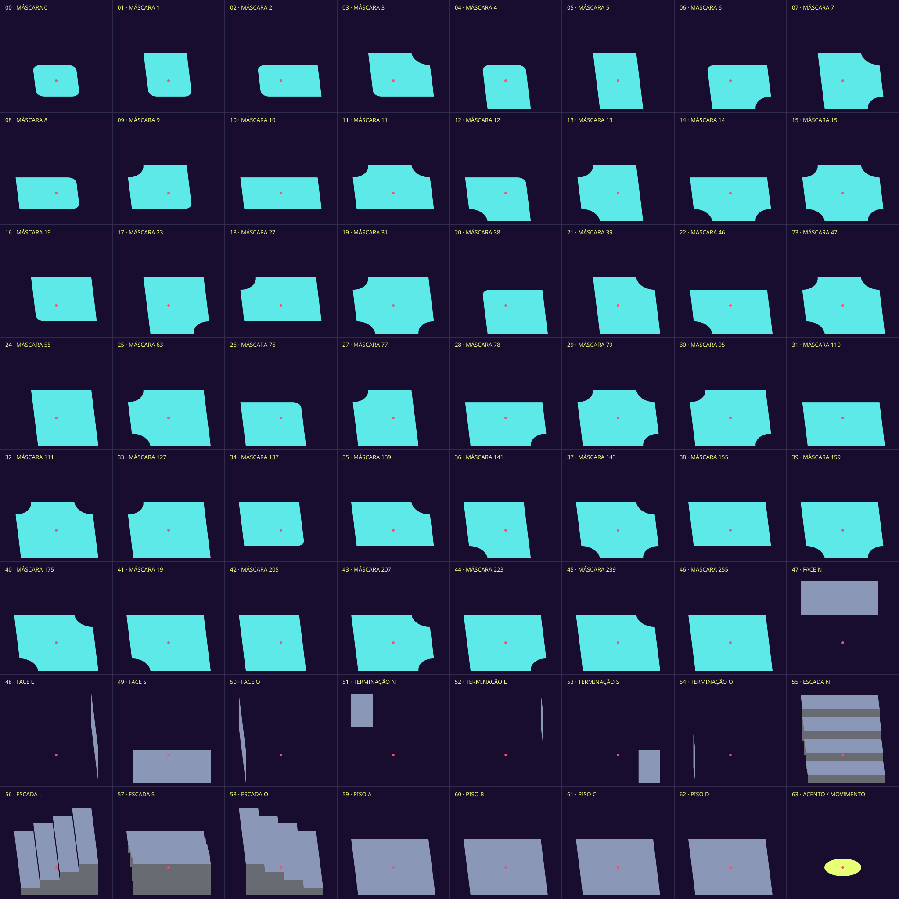

Prévia de geometria. As cores identificam os materiais; este não é o acabamento final dos assets.
64 POSIÇÕES
47 conexões · 17 complementos

Prévia de geometria. As cores identificam os materiais; este não é o acabamento final dos assets.
47 conexões · 17 complementos
